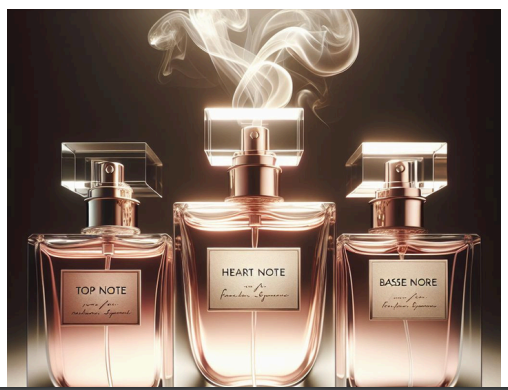

Scent Secrets Revealed
unveiling fragrance notes
Understanding the Layers of Your Perfume's Scent Profile

Fragrance notes are the aromatic components that make up a perfume's scent profile. These notes can be divided into three categories: top notes, heart notes (or middle notes), and base notes.
Top (Head) Notes
The initial scents you smell when you apply a fragrance. They are usually light and fleeting, lasting for about 15-30 minutes. Top notes create the first impression and often include citrus, herbal, or fruity scents.
Heart Notes (Middle Notes)
These emerge after the top notes evaporate. They form the core of the fragrance and last for several hours. Heart notes provide the character and personality of the perfume and typically include floral, spicy, or green scents.
BASE NOTES
These are the foundation of the fragrance, appearing after the heart notes have settled. They are the longest-lasting and can linger for hours or even days. Base notes include rich, deep, and often woody or musky scents that give the fragrance its longevity and depth.
Perfume compositions can be complex, with multiple notes blending together, to create a unique and evolving scent. The combination of these notes determines the overall aroma and character of a fragrance. Understanding the notes can help you select perfumes that align with your preferences and suit different occasions.
Read more on fragrance notes here…